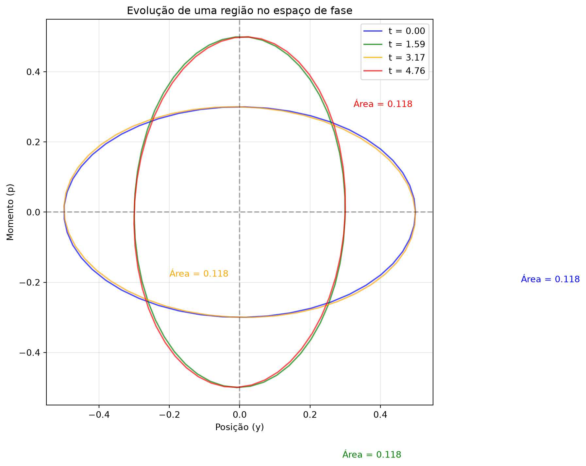
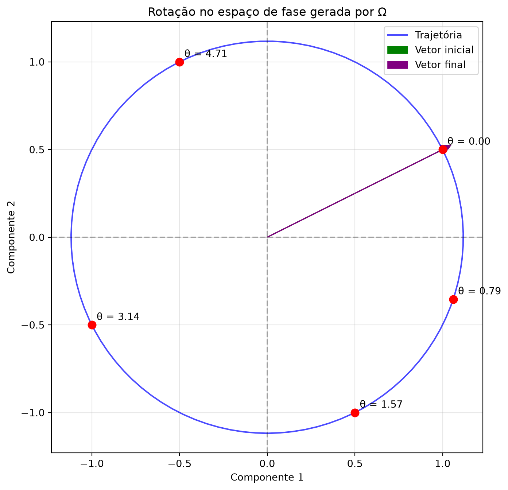

Propagadores e Estruturas Simpléticas
1 Introdução
1.1 Objetivos da Aula
Nesta aula, exploramos as estruturas matemáticas por trás dos propagadores dependentes e independentes do tempo. Os principais tópicos abordados foram:
- Soluções da equação de Helmholtz e a importância dos sinais na separação de variáveis
- O formalismo de sistemas dinâmicos e a propagação de distribuições de probabilidade
- O Wronskiano como ferramenta para estudar independência linear de soluções
- A estrutura simplética das equações diferenciais de segunda ordem
- A conexão com a mecânica quântica e o papel da unidade imaginária
A motivação central é entender como a informação se propaga no espaço-tempo, tanto do passado para o futuro (propagadores causais) quanto do futuro para o passado (propagadores avançados), e como isso se relaciona com a mecânica quântica e estatística.
2 Soluções da Equação de Helmholtz
2.1 A Equação de Helmholtz e a Separação de Variáveis
A equação de Helmholtz aparece naturalmente quando aplicamos o método de separação de variáveis à equação de onda: \[ \frac{1}{c^2}\frac{\partial^2 \phi}{\partial t^2} - \nabla^2 \phi = 0 \] Com a separação \(\phi(t, \mathbf{x}) = h(t)\psi(\mathbf{x})\), obtemos: \[ \frac{1}{h}\frac{d^2 h}{dt^2} = -k^2 c^2 \] e \[ \nabla^2 \psi = -k^2 \psi \]
O sinal negativo em \(-k^2\) é crucial: ele garante soluções oscilatórias (senos e cossenos) em vez de exponenciais reais. Este sinal é determinado pelas condições de contorno do problema físico.
2.2 A Escolha das Soluções
Para a equação de Helmholtz, as soluções podem ser escritas de várias formas equivalentes:
- Forma trigonométrica (para \(k^2 > 0\)): \[ \psi(x) = A\sin(kx) + B\cos(kx) \]
- Forma exponencial complexa: \[ \psi(x) = \alpha e^{ikx} + \alpha^* e^{-ikx} \]
- Forma geral (para \(\beta\) arbitrário): \[ \psi''(x) = \beta\psi(x) \]
A escolha entre formas trigonométricas e exponenciais não é uma questão de “certo ou errado” — é uma questão de conveniência e de quais condições de contorno precisam ser satisfeitas. As duas representações são equivalentes, assim como escrever um vetor em coordenadas cartesianas ou polares.
2.3 O Caso do Laplaciano Tridimensional
Quando resolvemos problemas com simetria esférica, o Laplaciano em coordenadas esféricas nos leva a: \[ \nabla^2 \psi = \frac{1}{r^2}\frac{\partial}{\partial r}\left(r^2\frac{\partial \psi}{\partial r}\right) + \frac{1}{r^2\sin\theta}\frac{\partial}{\partial \theta}\left(\sin\theta\frac{\partial \psi}{\partial \theta}\right) + \frac{1}{r^2\sin^2\theta}\frac{\partial^2 \psi}{\partial \phi^2} \] Para soluções radiais \(\psi(r)\), temos: \[ \frac{d^2\psi}{dr^2} + \frac{2}{r}\frac{d\psi}{dr} = -k^2\psi \]
A equação de Helmholtz também aparece na mecânica quântica para partículas livres, onde o operador Hamiltoniano é \(H = -\frac{\hbar^2}{2m}\nabla^2\), e a equação de Schrödinger independente do tempo é \(-\frac{\hbar^2}{2m}\nabla^2\psi = E\psi\).
3 O Propagador de Helmholtz
3.1 A Função de Green
Para resolver a equação de Helmholtz com uma fonte pontual, consideramos: \[ (\nabla^2 + k^2)G(\mathbf{x}, \mathbf{x}') = -\delta^3(\mathbf{x} - \mathbf{x}') \] A solução fundamental (função de Green) é: \[ G(\mathbf{x}, \mathbf{x}') = -\frac{e^{ik|\mathbf{x} - \mathbf{x}'|}}{4\pi|\mathbf{x} - \mathbf{x}'|} \]
O sinal na exponencial (\(e^{ikr}\) vs \(e^{-ikr}\)) é fundamental para a escolha entre propagadores causais (passado → futuro) e avançados (futuro → passado). Ambos são igualmente válidos matematicamente, mas têm interpretações físicas diferentes.
3.2 Construção da Solução Geral
Para encontrar a solução geral da equação de Helmholtz com uma fonte, usamos o método de separação de variáveis e a função de Green. O resultado é: \[ \psi(\mathbf{x}) = -\frac{1}{4\pi}\int d^3x' \, G(\mathbf{x}, \mathbf{x}')f(\mathbf{x}') \] onde \(f(\mathbf{x}')\) é a função fonte.
A função de Green representa a resposta do sistema a uma fonte pontual. Para problemas mais complexos, podemos construir soluções por superposição (princípio da linearidade).
4 Sistemas Dinâmicos e Propagação de Informação
4.1 O Problema das Condições Iniciais
Em física clássica, um problema típico consiste em especificar condições iniciais (posição e velocidade) e propagar a solução no tempo. No entanto, há duas motivações para considerar o problema de forma mais geral:
- Incerteza experimental: nunca conhecemos exatamente a condição inicial
- Propagação de distribuições: na mecânica estatística e quântica, propagamos distribuições de probabilidade, não estados exatos
Na mecânica quântica, o problema é fundamentalmente de condição inicial e final, não apenas de condições iniciais. Isso está relacionado ao princípio variacional e aos propagadores de Feynman.
4.2 O Wronskiano e a Independência Linear
Para uma equação diferencial de segunda ordem: \[ y'' + P(x)y' + Q(x)y = 0 \] O Wronskiano de duas soluções \(y_1\) e \(y_2\) é definido como: \[ W(y_1, y_2) = y_1 y_2' - y_2 y_1' \] E satisfaz a equação: \[ W' = -P(x)W \] Portanto: \[ W(x) = W_0 \exp\left(-\int P(x)dx\right) \] onde \(W_0\) é uma constante.
O Wronskiano é uma quantidade conservada (a menos de um fator exponencial) que mede a independência linear das soluções. Se \(W \neq 0\), as duas soluções são linearmente independentes e formam uma base para o espaço de soluções.
5 A Estrutura Simplética
5.1 O Espaço de Fase
O espaço de fase é construído a partir das variáveis canônicas \((y, p)\), onde \(p\) é o momento conjugado: \[ p = m(x)y' \] com \(m(x)\) sendo a “massa” efetiva do sistema.
As equações de Hamilton para este sistema são: \[ y' = \frac{\partial H}{\partial p} \] \[ p' = -\frac{\partial H}{\partial y} \] onde a Hamiltoniana é: \[ H(y, p) = \frac{p^2}{2m} + \frac{1}{2}m\omega^2 y^2 \]
5.2 A Matriz Simplética
O espaço de fase tem uma estrutura simplética natural, representada pela matriz: \[ \Omega = \begin{pmatrix} 0 & 1 \\ -1 & 0 \end{pmatrix} \] Esta matriz satisfaz \(\Omega^2 = -I\) e é análoga à unidade imaginária \(i\).
O Wronskiano pode ser escrito como: \[ W = \mathbf{v}_1^T \Omega \mathbf{v}_2 \] onde \(\mathbf{v}_i = (y_i, p_i)^T\) são vetores no espaço de fase.
A estrutura simplética é uma consequência direta do caráter de segunda ordem das equações de movimento. Ela garante a conservação do Wronskiano e, portanto, da independência linear das soluções.
5.3 O Papel da Unidade Imaginária
A analogia entre a matriz \(\Omega\) e a unidade imaginária \(i\) é profunda. A matriz \(\Omega\) atua como um gerador de rotações no espaço de fase: \[ e^{\theta\Omega} = \begin{pmatrix} \cos\theta & \sin\theta \\ -\sin\theta & \cos\theta \end{pmatrix} \] Na mecânica quântica, a unidade imaginária \(i\) aparece como gerador de rotações no espaço de fase (ou espaço de Hilbert), o que está diretamente relacionado à equação de Schrödinger.
A escolha de representar soluções complexas (\(\psi = \psi_1 + i\psi_2\)) em mecânica quântica é equivalente a escolher uma base no espaço de fase. A liberdade de fase \(\psi \to e^{i\theta}\psi\) corresponde a rotações no espaço de fase, preservando o Wronskiano (a “norma” do estado).
6 Conexões com a Mecânica Quântica
6.1 A Equação de Schrödinger
A equação de Schrödinger dependente do tempo: \[ i\hbar\frac{\partial\psi}{\partial t} = -\frac{\hbar^2}{2m}\nabla^2\psi + V\psi \] pode ser vista como uma generalização da estrutura simplética que acabamos de construir. O termo \(i\hbar\) garante que a equação preserve a probabilidade (ou seja, a “norma” no espaço de Hilbert), assim como a matriz \(\Omega\) preserva o Wronskiano.
6.2 Propagadores Causal e Avançado
Na teoria quântica de campos, dois tipos de propagadores são fundamentais:
- Propagador causal (ou de Feynman): propaga informação do passado para o futuro
- Propagador avançado: propaga informação do futuro para o passado
Ambos são necessários para descrever corretamente as interações de partículas e antipartículas.
A escolha entre \(e^{ikr}\) e \(e^{-ikr}\) na função de Green está diretamente relacionada à escolha do propagador (causal ou avançado). Ambas as escolhas são matematicamente válidas e têm interpretações físicas diferentes.
7 Visualizações com Python
7.1 Propagação no Espaço de Fase
Code
import numpy as np
import matplotlib.pyplot as plt
from matplotlib.patches import Ellipse
# Parâmetros
k = 1.0 # constante elástica
m = 1.0 # massa
omega = np.sqrt(k / m)
# Tempo de evolução
t = np.linspace(0, 2 * np.pi / omega, 100)
# Região inicial (elipse)
theta = np.linspace(0, 2 * np.pi, 50)
y0 = 0.5 * np.cos(theta)
p0 = 0.3 * np.sin(theta)
# Evolução no espaço de fase
y = y0 * np.cos(omega * t[:, None]) + (p0 / (m * omega)) * np.sin(omega * t[:, None])
p = -m * omega * y0 * np.sin(omega * t[:, None]) + p0 * np.cos(omega * t[:, None])
# Visualização
fig, ax = plt.subplots(figsize=(8, 8))
# Plotar a evolução em diferentes tempos
indices = [0, 25, 50, 75]
colors = ["blue", "green", "orange", "red"]
for i, idx in enumerate(indices):
ax.plot(y[idx, :], p[idx, :], color=colors[i], label=f"t = {t[idx]:.2f}", alpha=0.7)
# Área (volume) do espaço de fase
area = 0.5 * np.pi * np.std(y[idx, :]) * np.std(p[idx, :])
ax.text(
y[idx, 0] + 0.3,
p[idx, 0] - 0.2,
f"Área = {area:.3f}",
color=colors[i],
fontsize=10,
)
ax.set_xlabel("Posição (y)")
ax.set_ylabel("Momento (p)")
ax.set_title("Evolução de uma região no espaço de fase")
ax.axhline(0, color="black", linestyle="--", alpha=0.3)
ax.axvline(0, color="black", linestyle="--", alpha=0.3)
ax.legend()
ax.grid(True, alpha=0.3)
ax.set_aspect("equal")
plt.show()
7.2 A Matriz Simplética como Gerador de Rotações
Code
import numpy as np
import matplotlib.pyplot as plt
# Matriz simplética
Omega = np.array([[0, 1], [-1, 0]])
# Vetor inicial
v = np.array([1.0, 0.5])
# Ângulos de rotação
theta = np.linspace(0, 2 * np.pi, 100)
# Evolução do vetor
v_rot = []
for t in theta:
# e^{tΩ} = cos(t)I + sin(t)Ω
R = np.cos(t) * np.eye(2) + np.sin(t) * Omega
v_rot.append(R @ v)
v_rot = np.array(v_rot)
# Visualização
fig, ax = plt.subplots(figsize=(8, 8))
# Trajetória
ax.plot(v_rot[:, 0], v_rot[:, 1], "b-", label="Trajetória", alpha=0.7)
# Pontos específicos
points = [0, np.pi / 4, np.pi / 2, np.pi, 3 * np.pi / 2]
for t in points:
idx = int(t * len(theta) / (2 * np.pi))
R = np.cos(t) * np.eye(2) + np.sin(t) * Omega
vp = R @ v
ax.plot(vp[0], vp[1], "ro", markersize=8)
ax.annotate(
f"θ = {t:.2f}",
(vp[0], vp[1]),
fontsize=10,
xytext=(5, 5),
textcoords="offset points",
)
# Vetor inicial e final
ax.arrow(
0,
0,
v[0],
v[1],
head_width=0.05,
head_length=0.05,
fc="green",
ec="green",
label="Vetor inicial",
)
ax.arrow(
0,
0,
v_rot[-1, 0],
v_rot[-1, 1],
head_width=0.05,
head_length=0.05,
fc="purple",
ec="purple",
label="Vetor final",
)
ax.set_xlabel("Componente 1")
ax.set_ylabel("Componente 2")
ax.set_title("Rotação no espaço de fase gerada por Ω")
ax.axhline(0, color="black", linestyle="--", alpha=0.3)
ax.axvline(0, color="black", linestyle="--", alpha=0.3)
ax.legend()
ax.grid(True, alpha=0.3)
ax.set_aspect("equal")
plt.show()
8 Resumo
| Conceito | Descrição | Importância |
|---|---|---|
| Equação de Helmholtz | \(\nabla^2\psi = -k^2\psi\) | Descreve oscilações espaciais; aparece na separação de variáveis da equação de onda |
| Função de Green | \(G(\mathbf{x},\mathbf{x}') = -\frac{e^{ikr}}{4\pi r}\) | Resposta a uma fonte pontual; contém a escolha do propagador (causal ou avançado) |
| Wronskiano | \(W = y_1 y_2' - y_2 y_1'\) | Mede independência linear de soluções; é conservado (a menos de fator exponencial) |
| Espaço de fase | \((y, p)\) com \(p = m y'\) | Representação simplética do sistema; generaliza para mecânica quântica |
| Matriz simplética | \(\Omega = \begin{pmatrix}0&1\\-1&0\end{pmatrix}\) | Gerador de rotações no espaço de fase; análoga à unidade imaginária \(i\) |
| Propagadores | Causal (passado→futuro) e avançado (futuro→passado) | Ambas as escolhas são necessárias na teoria quântica de campos |
| Unidade imaginária | \(i\) na equação de Schrödinger | Garante preservação da probabilidade; análoga à estrutura simplética |
9 Exercícios
9.1 Exercício 1: Soluções da Equação de Helmholtz
Considere a equação de Helmholtz unidimensional: \[ \psi''(x) + k^2\psi(x) = 0 \]
Mostre que as soluções podem ser escritas como \(\psi(x) = A\sin(kx) + B\cos(kx)\) e também como \(\psi(x) = \alpha e^{ikx} + \beta e^{-ikx}\).
Encontre a relação entre as constantes \((A, B)\) e \((\alpha, \beta)\).
Qual das representações é mais adequada para condições de contorno do tipo \(\psi(0) = 0\) e \(\psi(L) = 0\)?
9.2 Exercício 2: Wronskiano
Para a equação \(y'' + 2y' + 5y = 0\):
Encontre as duas soluções linearmente independentes.
Calcule o Wronskiano e verifique que \(W' = -2W\) (confirmando a fórmula geral).
Qual é a constante \(W_0\)?
9.3 Exercício 3: Função de Green
Para a equação de Helmholtz em 1D:
\[ (\frac{d^2}{dx^2} + k^2)G(x, x') = -\delta(x - x') \]
Mostre que \(G(x, x') = \frac{i}{2k}e^{ik|x-x'|}\) é uma solução.
Qual é a diferença entre as escolhas \(+ik\) e \(-ik\) na exponencial?
Interprete fisicamente cada escolha.
9.4 Exercício 4: Espaço de Fase
Para o oscilador harmônico com \(y'' + \omega^2 y = 0\):
Escreva as equações de Hamilton correspondentes.
Mostre que a Hamiltoniana \(H = \frac{p^2}{2m} + \frac{1}{2}m\omega^2 y^2\) é conservada.
Calcule a matriz \(\Omega\) e verifique que \(\Omega^2 = -I\).
9.5 Exercício 5: Estrutura Simplética
Para o sistema \(y'' + P(x)y' + Q(x)y = 0\):
Defina \(p = m(x)y'\) e mostre que \(m(x)\) satisfaz \(m'(x) = P(x)m(x)\).
Mostre que o Wronskiano pode ser escrito como \(W = y_1 p_2 - y_2 p_1\).
Verifique que \(\frac{d}{dx}(y_1 p_2 - y_2 p_1) = 0\).
9.6 Exercício 6: Propagação no Espaço de Fase
Considere uma região circular no espaço de fase de um oscilador harmônico.
Mostre que a área da região é conservada (teorema de Liouville).
Como a forma da região evolui no tempo?
Represente graficamente a evolução para diferentes tempos.
9.7 Exercício 7: Separação de Variáveis
Considere a equação de onda em 3D:
\[ \frac{1}{c^2}\frac{\partial^2\phi}{\partial t^2} = \nabla^2\phi \]
Faça a separação de variáveis \(\phi(t, \mathbf{x}) = T(t)X(\mathbf{x})\) e obtenha as equações para \(T\) e \(X\).
Mostre que \(X\) satisfaz a equação de Helmholtz.
Qual é a relação entre as constantes de separação?
9.8 Exercício 8: Métrica de Minkowski
Na teoria de campos, a equação de Klein-Gordon é:
\[ (\Box + m^2)\phi = 0 \]
onde \(\Box = \frac{1}{c^2}\frac{\partial^2}{\partial t^2} - \nabla^2\).
Mostre que, ao separar variáveis com \(\phi = e^{-iEt/\hbar}\psi(\mathbf{x})\), obtém-se a equação de Helmholtz.
Como a métrica de Minkowski (com assinatura \(+---\)) influencia o sinal da equação?
Explique por que a rotação de Wick (\(t \to it\)) transforma a equação de Klein-Gordon em uma equação de Laplace.
9.9 Exercício 9: Geradores de Transformação
Na mecânica quântica, a evolução temporal é dada por \(U(t) = e^{-iHt/\hbar}\).
Mostre que \(U(t)\) é um operador unitário (preserva a norma).
Compare com a evolução no espaço de fase clássico: \(e^{t\Omega}\).
Qual é o análogo clássico da unidade imaginária \(i\)?
9.10 Exercício 10: Propagadores Avançados
Na teoria quântica de campos, dois propagadores são definidos:
- Causal (de Feynman): \(G_F(x, x') = \frac{e^{ik|x-x'|}}{4\pi|x-x'|}\)
- Avançado: \(G_A(x, x') = \frac{e^{-ik|x-x'|}}{4\pi|x-x'|}\)
Qual é a diferença de sinal entre eles?
Como cada propagador se comporta no limite \(x \to \infty\) (condições de contorno)?
Por que ambos são necessários na teoria de campos?